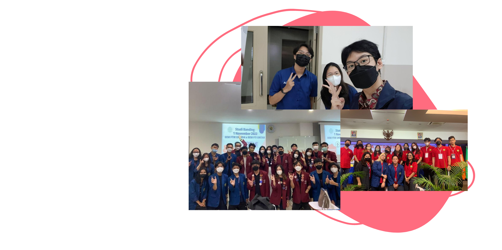

Profile
Kenni Hasim - 412021004
Seorang mahasiswa biasa yang ingin tugas nya cepat selesai dan ingin
lulus dengan nilai yang memuaskan. Serta membanggakan papa, mama dan
menjadi anak teladan. Saya anak baik yang suka menabung dan tidak
pernah berkata kasar.
Biodata mahasiswa
Nama lengkap Kenni Hasim, saya merupakan salah satu mahasiswa aktif dari universitas UKRIDA jurusan Teknik Informatika yang saat ini sedang berjalan di semester ke 3, dan saat ini sedang melakukan pembelajaran untuk mengembangkan website menggunakan html, css, serta javascript.
"Ini websiteku, mana websitemu?"